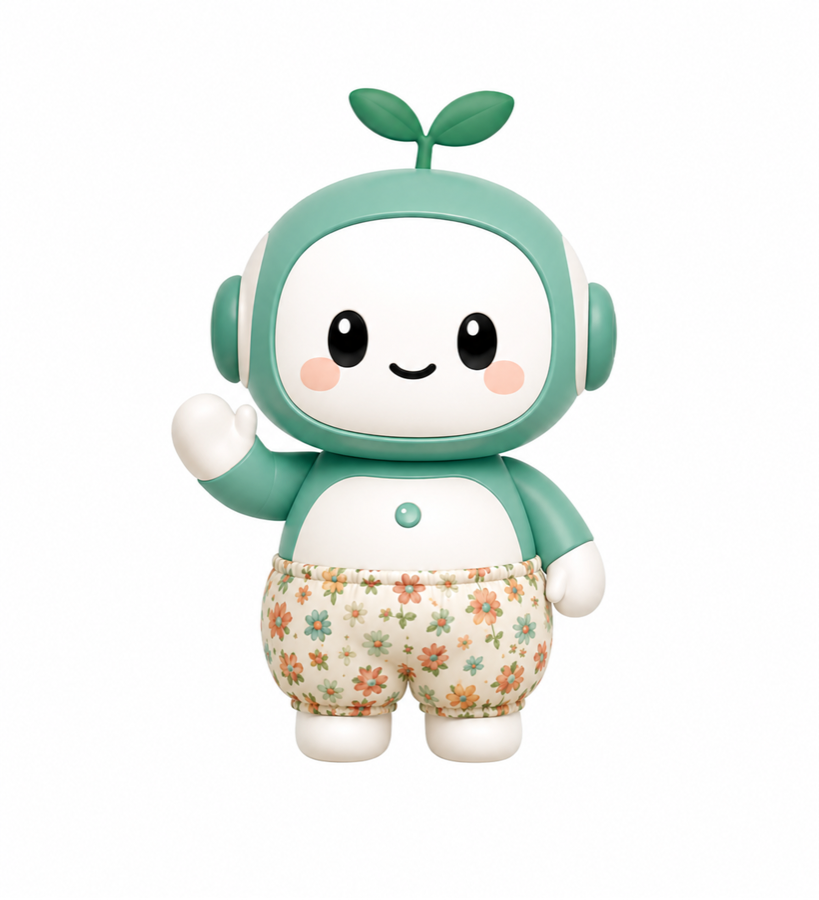

서울청년기획봉사단 3기 · 찾아봄

안녕하세요, 찾아봇이에요.
오늘 어떤 도움이 필요하세요?
418근거 자원
4DB 출처
7상황 분류
복지자원 탐색
정부24, 복지로, 광진구 민간복지, 찾아봄 TOP10을 합쳐 검색합니다.
찜한 정보
저장한 복지자원을 보호자나 활동가에게 공유할 수 있습니다.
설정
실증 환경에 맞게 글자, 음성, 지역, 공유 방식을 조정합니다.
큰 글자
어르신이 읽기 편하도록 글자를 키웁니다.
음성 안내
찾아봇 말풍선을 소리로 읽어 드립니다.
지역 설정
추천 결과 설명에 사용할 기본 지역입니다.
보호자·활동가 공유
찜한 정보를 한 번에 복사합니다.